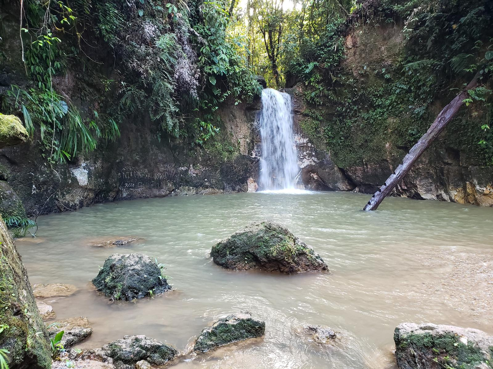
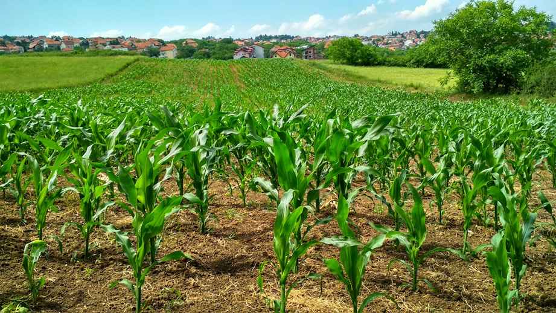

🌽
Turismo rural
Haciendas y cultivos de maíz que reflejan la identidad agrícola montuvia del cantón.
Cantón Ventanas · Provincia de Los Ríos
Somos una agencia de turismo local dedicada a mostrarte los ríos, cascadas, cultivos de maíz y la gastronomía típica del cantón Ventanas, tierra rural en el corazón de Los Ríos.
Ubicado en la provincia de Los Ríos, con sus parroquias rurales de Chacarita, Los Ángeles y Zapotal, Ventanas es un cantón de tradición montuvia, agricultura maicera y ríos de agua dulce que invitan al turismo de naturaleza durante todo el año.
Haciendas y cultivos de maíz que reflejan la identidad agrícola montuvia del cantón.
Las Cascadas San Jacinto y los ríos Zapotal, Sibimbe y Oncebí, ideales para el ecoturismo.
Seco de pato, ayampacos y sancocho de bocachico, sabores que identifican a Ventanas.
Una probadita de todo lo que puedes descubrir cuando viajas con nosotros.

Tres cascadas en escalinata de unos 25 metros, en la parroquia Los Ángeles.

Espacio de esparcimiento junto al río Zapotal, símbolo de identidad de la ciudad.

Recorridos por haciendas montuvias productoras de maíz y otros cultivos.
Diseñamos paquetes turísticos a tu medida: río, cascadas, agroturismo y gastronomía montuvia en un solo viaje.
Solicita tu reserva